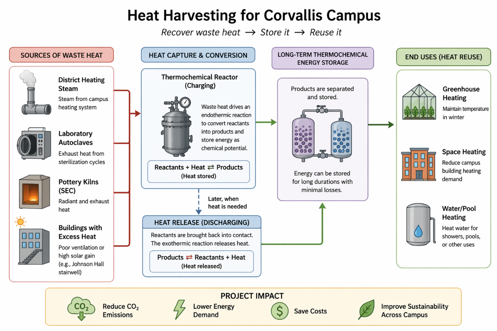

OSU · AuYeung Group · Research
Reactor development for chemical energy storage
My contribution
I work on low-temperature liquid thermochemical energy-storage systems in the AuYeung Group, with a focus on reactor development and experimental testing.
My related reactor work includes building and testing a system to evaluate steam as an alternative purge gas to nitrogen during the initial redox step. The comparison investigates whether steam could reduce gas costs and improve accessibility.
Campus heat-harvesting grant
I wrote a proposal and secured $4,000 to investigate using thermochemical energy storage to reduce campus emissions. The project explores recovering waste heat from sources such as district-heating steam and laboratory exhaust, storing the energy, and reusing it for heating.

Progress reported in July 2026
By the July 15 interim report, our team had developed an inventory of potential campus waste-heat sources. We used OSU’s 2024 greenhouse-gas report and literature values to estimate the scale of the available heat, including sources in campus infrastructure, laboratory equipment, and buildings.
The estimates were preliminary and required confirmation with Facilities Services and individual laboratories. Laboratory-equipment estimates were per unit. We prioritized concentrated, consistently operating sources such as cooling towers, server rooms, mechanical rooms, and electrical rooms for further recovery assessment.
Our team had also contacted the Office of Sustainability and Facilities Services. The report identified completing data collection and developing a heat-recovery and reuse plan as the next steps.
Funded project scope
- Identify and quantify sources of waste heat across campus.
- Develop a plan for recovering and reusing that heat, considering the quantity and temperature of the available energy streams.
- Design and demonstrate a prototype that captures and redeploys thermal energy.
The $4,000 award supports investigation of the concept. Lower energy demand and campus emissions are project goals to evaluate through the proposed work.